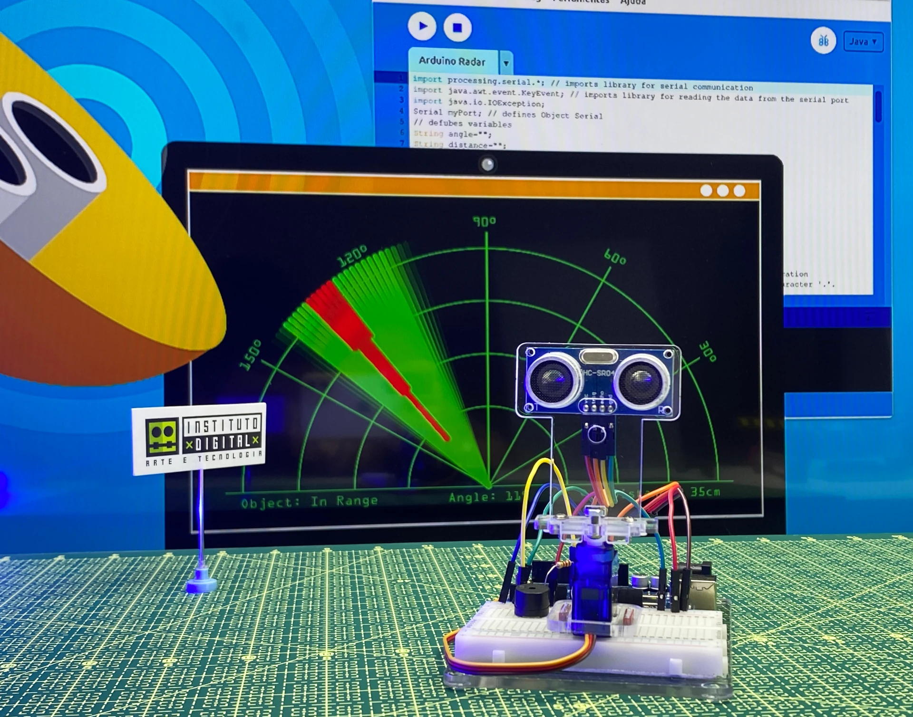

2
3
4
5
6
Hardware e software trabalhando juntos
Sensores Arduino (pressão, radar ou ultrassônicos) medem o nível da água em tempo real. Dados são processados por algoritmos em Python que mandão relatorios para os órgãos responsaveis.
